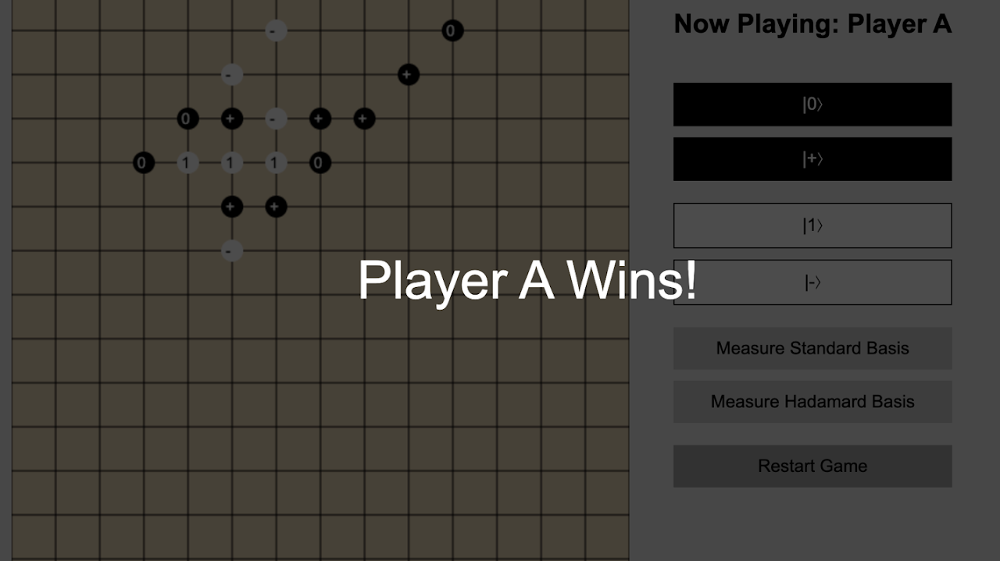
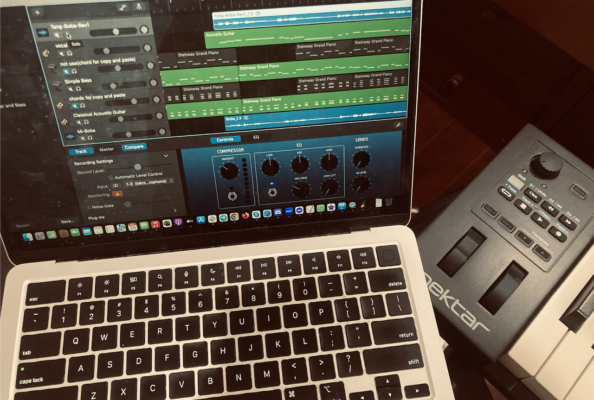

Quantum Gomoku
Player A (Black) and Player B (White) take turns playing.
Player A: |0⟩, |+⟩ Player B: |1⟩, |-⟩
How to play
Player A must place a stone on the first turn. On each subsequent turn, a player may choose one action:
- Place a stone in one of their allowed quantum states; or
- Measure unmeasured stones using the standard or Hadamard basis.
After completing one action, the turn immediately passes to the next player.
Winning condition
After a measurement, a player wins if five stones of the same color are connected consecutively in a straight line—horizontally, vertically, or diagonally.
The game was designed by Er-Cheng Tang and Miryam Huang.

Where math hums, and proofs sing
I grew up playing piano, violin, and singing in choir. I was the vocalist in my high-school rock band. In college, I joined a digital music production club and once wrote—and sold—a song for the College of Science. I also wrote our department's graduation song. Lately, I’ve stepped away from strings, listening more to what my body and physical therapy need.
Sometimes, I write songs inspired by research that moves me—something elegant or quietly brilliant.
If our work shares that spark, maybe we can shape it into music together. My preferred software is Logic Pro, GarageBand, and REAPER.